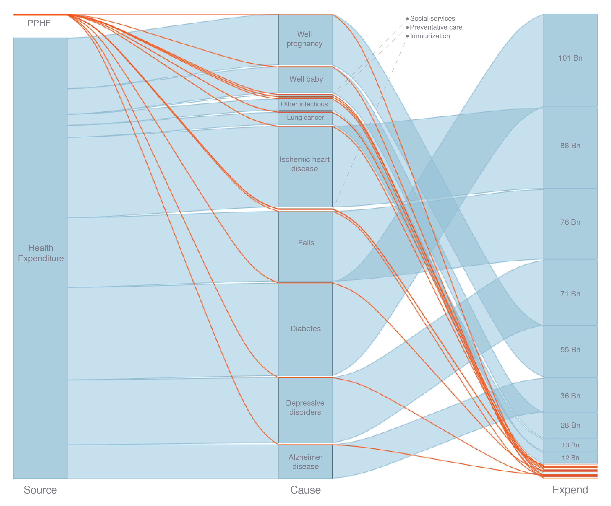

Introduction
This was a personal project that I worked on after being inspired to apply data science techniques to public health issues from a population health metrics course I took at the UW. The project is an analysis of US healthcare spending, motivated by the current administration's proposed replacement of the Affordable Care Act.
Overview
Part of the new health care bill includes the elimination of funds that go to the Center for Disease Control for a program called The Prevention and Public Health Fund. (PPHF) The program is dedicated to preventative care, immunizations, research, and public health infrastructure with annual funding of approximately one billion. To contextualise this number I used (with permission) a proprietary dataset compiled by the UW’s IHME on health expenditures in the US. The results when compared against the spending of the PPHF were fascinating. By wrangling the data, I filtered the expenditure categories down to the their most granular cause and for the most recent year (2013) By scraping the website of the Health and Human Services I was able to parse the allocation of funds that the PPFH uses. I then used an alluvial plot to contrast the spending of the PPFH against the relevant causes across categorical variables, producing the above plot. The difference in spending is striking, with the largest portions of spending going to treatment of non communicable diseases and PPFH spending making up only a fraction of any one of those categories. This is disturbing since the new bill would cut off any research or preventative care that could stop the development of these health problems.
Plot
Resources
I have to give a shout out to mbojan’s great alluvial plot package. Find it on Github here or install it directly for R like this:
devtools::install_github("mbojan/alluvial")
You can put together some really cool alluvial visualizations with just a little code, for example, the above visualization was made with just this bit: (after some lengthy data wrangling)
alluvial(compare.df[,2:4], freq=compare.df$expend,
gap.width=0.05,
mar = c(2, 1, 1, 1),
xlim_offset= c(0, 0),
ylim_offset= c(0, 0),
col = ifelse(compare.df$organization == "PPHF", "#FF530D", "#91BED4"),
border = ifelse(compare.df$organization == "PPHF", "#FF530D", "#91BED4"),
hide = compare.df$expend == 0,
blocks = TRUE,
ann=FALSE,
cex = 0.7
)
The health data that I used is a proprietary set from the Institute for Health Metrics and Evaluation so thanks to them. Information about the CDC’s The Prevention and Public Health Fund can be found on their website here